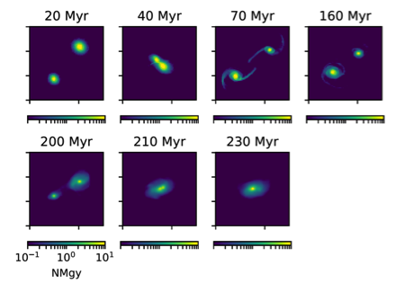
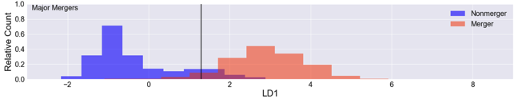
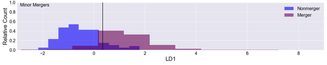
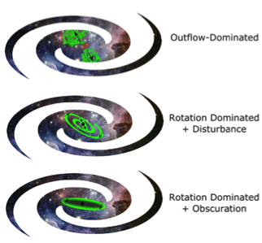
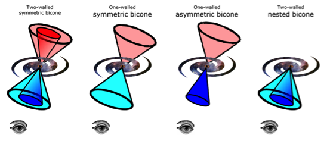
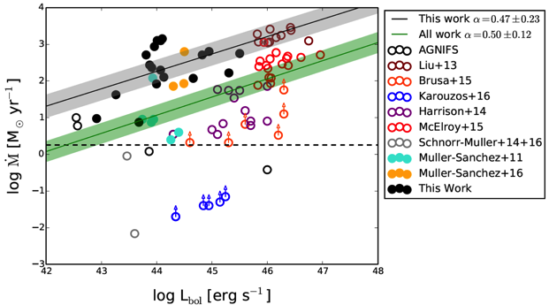

Press Release Seattle AAS:
CONTACTS
Rebecca Nevin,
University of Colorado,
rebecca.nevin@colorado.edu, +1-425-638-9745
Laura Blecha,
University of Florida
lblecha@ufl.edu, +1-352-392-4948
Julie Comerford,
University of Colorado
julie.comerford@colorado.edu, +1-303-735-7032
Karen Masters, SDSS Scientific Spokesperson,
Haverford College,
klmasters@haverford.edu +1-610-795-6066
@KarenLMasters / @SDSSurveys
Jordan Raddick, SDSS Public Information Officer,
Johns Hopkins University,
raddick@jhu.edu, +1-443-570-7105
@raddick
DON’T JUDGE A GALAXY BY ITS COVER: ASTRONOMERS DEVELOP NEW TOOL TO FIND MERGING GALAXIES
FOR RELEASE
January 8, 2019 at 2:15 PM PT (2215 UTC)
LINK TO SDSS RELEASE (BECOMES ACTIVE UPON EMBARGO LIFT)
https://www.sdss.org/press-releases/dont-judge-a-galaxy-by-its-cover-astronomers-develop-new-tool-to-find-merging-galaxies/
SEATTLE, WA -- Don’t judge a book by its cover, and don’t judge a galaxy by its image alone.
Today, at the 233rd AAS meeting in Seattle, astronomers from the Sloan Digital Sky Survey (SDSS) announce that they have developed a new tool to find otherwise-hidden galaxy mergers in data from the Mapping Nearby Galaxies at Apache Point Observatory (MaNGA) survey of SDSS. These results show that by going beyond simple searches for merging galaxies based just on how they look, astronomers will now be able find more galaxy mergers than ever before.
“Merging galaxies are key to understanding galaxy evolution, but finding them can be tricky,” says Rebecca Nevin of the University of Colorado, the lead author of the study. Nevin is presenting this work this week as a Dissertation talk, as it formed the basis of her PhD thesis at Colorado with Professor Julie Comerford.
A pair of merging galaxies is one of the most beautiful sights in astronomy, with giant tidal streams of stars and unusual shapes sometimes resembling animals (e.g. the Antennae, Mice, Tadpole, or Penguin galaxies). However, these beautiful visible features are visible are only found in a small fraction of merging galaxies - and even then only for a small part of the billions of years it takes for two galaxies to fully merge into one. Some galaxies that otherwise look “normal” may still be in the process of merging.
Astronomers have developed a way to find these hidden mergers. They created a method that uses simulations of merging galaxies to predict both how the mergers would look and how the stars in the galaxies would move. By comparing their results with observations of galaxies from the SDSS’s Mapping Nearby Galaxies at Apache Point Observatory (MaNGA) survey, astronomers will be able to do much better at identifying merging galaxies in the wild.
“These simulations allow us to predict the more subtle signs of merging galaxies, so we can find mergers in SDSS data that were previously hidden,” explains Laura Blecha (University of Florida), another key member of the team.
What the team is presenting today is the part of their method that analyzes galaxy images. They have essentially made a galactic photo album, including pictures of galaxies in all stages of merging. In the past, astronomers’ “photo albums” of galaxy mergers were sparse, including only galaxies in the stage of merging where they looked like spectacular mergers.
“Nowadays, it would be totally unthinkable to take only one or two selfies every year,” said Nevin. “We have modernized the galaxy merger photo album - now it’s like taking one galaxy merger selfie a day for years.”
The astronomers plan to make these extensive photo albums publicly available to everyone. Astronomers will use them to study how galaxies change as they undergo mergers.
The team’s work so far is already a giant step forward in merger identification, but they are already taking the next step. They have already begun to incorporate data on how the stars move in the galaxies from the SDSS MaNGA survey. This will allow the team to identify even more mergers - those where the galaxy looks completely “normal.”
The key to this new analysis is to incorporate data from MaNGA on how stars within galaxies are moving. “By going beyond images alone and incorporating stellar kinematics, we will find many more merging galaxies,” says Karen Masters of Haverford College, the Spokesperson for SDSS. “We’ll be able to learn how the merger process impacts how galaxies in our Universe evolve.”
These stellar kinematics are revealed in the maps created by the SDSS’s MaNGA survey. Because the spectra that MaNGA observes come from the light of all the stars in a particular part of a galaxy, stars, the spectra are slightly shifted by the Doppler Effect - blueshifted for the parts of a galaxy that are moving toward Earth and redshifted for the parts moving away from Earth. These subtle shifts reveal how the stars are moving around the galaxy.
When galaxies merge, the stars in them almost never collide, but they are thrown all around, creating dramatic distortions in the pattern of how stars move around the galaxy - patterns that astronomers refer to as “stellar kinematics.” In a typical, non-merging spiral galaxy, the stars rotate in a simple, predictable pattern. But if such a galaxy is undergoing a merger, that simple pattern becomes chaotic, creating wild (but predictable) arrangements of stellar motion. When a galaxy’s patterns of stellar motion have become distorted by a merger, the stellar kinematics data from MaNGA provides direct evidence of the merger. Nevin’s team, which includes astronomers from the University of Colorado Boulder, the University of Florida, and Princeton University, is beginning to add stellar kinematics data into their work.
“As we improve our machine learning algorithms to incorporate the stellar kinematics of merging galaxies, we are able to identify different stages of the merger. The disturbances in the stars can last longer than imaging signatures of a merger like faint tidal tails, which fade much quicker. This means we can identify later stages in the merger, when in the imaging the galaxies look just like normal galaxies. This is a powerful new technique in the study of merging galaxies.”
Understanding mergers is not only important to astronomers like Nevin’s team; this understanding can help us predict the future of our own Galaxy. The Milky Way will merge with the Large and Small Magellanic Clouds in about 2.5 billion years - and is then predicted to merge with the much more massive Andromeda galaxy in five billion years, combining to form a single super-galaxy, which some dub “Milkdromeda.” This event might throw the Sun out of the galaxy, but it won’t matter to future inhabitants of Earth, which will have been swallowed by the Sun as it turns into a red giant star at around the same time. But maybe our descendants will see this for themselves as they travel among the stars.
IMAGE #1
http://bit.ly/mergers-panels
Caption: Three galaxies observed by the SDSS MaNGA survey. The top row shows the galaxies’ images, while the bottom row shows the velocity of the stars within the galaxies; red means the stars are moving away from us and blue means towards us. The panel on the left shows an isolated spiral galaxy, not undergoing a merger. The middle panels show a spectacular pair of merging galaxies, obvious in both the image and the velocity map. The right panels show what appears in the image to be a single galaxy - but the velocity map reveals that it is actually a galaxy that has just merged. This is evident in the disturbed (counter-rotating) features in the velocity map. This example demonstrates the power of the team’s new method, which will identify merging galaxies using both imaging and kinematics.
Image credit: Rebecca Nevin (University of Colorado Boulder) and the SDSS collaboration
IMAGE #2
http://bit.ly/hubble-mergers-montage
Caption: This montage of six images from the Hubble Space Telescope shows six real galaxies in different stages of the merger process. For more information about these galaxies, see the image description at the Hubble Space Telescope website (https://www.spacetelescope.org/images/heic0810ac/).
Image credit: NASA, ESA, the Hubble Heritage Team (STScI/AURA)-ESA/Hubble Collaboration and A. Evans (University of Virginia, Charlottesville/NRAO/Stony Brook University), K. Noll (STScI), and J. Westphal (Caltech)
VIDEO #1 (latest version)
http://bit.ly/mergers-video-nevin
Caption: This animation shows one of the galaxy merger simulations the team created. The first 38 seconds shows the simulation running, covering 2.5 billion years of history. From each step of the simulation, the team figures out what the galaxy would look like when viewed from Earth by the Sloan Digital Sky Survey (shown from 0:39 to 1:06). The last part of the video (1:06-1:30) shows a collection of simulated images and how they are used to create a classification method that can then be applied to real SDSS images.
Image credit: Rebecca Nevin (University of Colorado), Laura Blecha (University of Florida), and the SDSS collaboration
ABOUT THE SLOAN DIGITAL SKY SURVEY
Funding for the Sloan Digital Sky Survey IV has been provided by the Alfred P. Sloan Foundation, the U.S. Department of Energy Office of Science, and the Participating Institutions. SDSS acknowledges support and resources from the Center for High-Performance Computing at the University of Utah. The SDSS web site is www.sdss.org.
SDSS is managed by the Astrophysical Research Consortium for the Participating Institutions of the SDSS Collaboration including the Brazilian Participation Group, the Carnegie Institution for Science, Carnegie Mellon University, the Chilean Participation Group, the French Participation Group, Harvard-Smithsonian Center for Astrophysics, Instituto de Astrofísica de Canarias, The Johns Hopkins University, Kavli Institute for the Physics and Mathematics of the Universe (IPMU) / University of Tokyo, Lawrence Berkeley National Laboratory, Leibniz Institut für Astrophysik Potsdam (AIP), Max-Planck-Institut für Astronomie (MPIA Heidelberg), Max-Planck-Institut für Astrophysik (MPA Garching), Max-Planck-Institut für Extraterrestrische Physik (MPE), National Astronomical Observatories of China, New Mexico State University, New York University, University of Notre Dame, Observatório Nacional / MCTI, The Ohio State University, Pennsylvania State University, Shanghai Astronomical Observatory, United Kingdom Participation Group, Universidad Nacional Autónoma de México, University of Arizona, University of Colorado Boulder, University of Oxford, University of Portsmouth, University of Utah, University of Virginia, University of Washington, University of Wisconsin, Vanderbilt University, and Yale University.
~~~~
My current work involves using simulated Gadget-SPH simulations from Laura Blecha to create an imaging and kinematic classification scheme to identify galaxies undergoing mergers:

This work involves making synthetic images and spectra to match the specifications of the MaNGA survey. I develop code to mimic the DRP from the MaNGA survey, extracting stellar velocities using stellar template spectra and ppxf. I also use kinemetry to explain the relative disorder stellar kinematics of a given galaxy. I extract kinematic and imaging predictors and use a Linear Discriminant Analysis tool to separate the classes of merging and non merging simulated galaxies using a combination of these kinematic and imaging predictors (below, for both major and minor mergers). Individually the predictors cannot separate the two classes of merging and non merging galaxies, but when used in a linear combination, they do a much better job:


After developing the classification scheme, I will apply the scheme to the 10,000 galaxies in the MaNGA survey.
I also work with double-peaked AGN selected from SDSS. Double-peaked AGN represent a phase of Supermassive Black Hole (SMBH) evolution that is very kinematically interesting. I work on characterizing these galaxies kinematically and using their AGN activity to learn about galaxy evolution, feedback, and SMBH-galaxy co-evolution.

Galaxies with disturbed kinematics often exhibit double peaked narrow line profiles in [OIII]. This can originate from a variety of physical processes, including outflows, inflows, or rotation-dominated kinematics.
I investigate observable AGN outflows in the local universe. These outflows are associated with moderate-luminosity Seyfert galaxies and offer a unique opportunity to determine the geometry of the NLR as well as the potential effects of feedback associated with these AGN outflows. I create analytic models using a Markov Chain Monte Carlo iterative process to determine the geometry and energy associated with the biconical outflows.

The double-peaked biconical outflows in my sample are shown by the three outflows to the right (above) that have two total walls. They are variations of the complete model of a two-walled symmetric bicone (one the left). This can be explained with a combination of illumination, obscuration, and/or selection effects.
Many of these moderate-luminosity AGN outflows from my sample (in black) have very powerful mass outflow rates, indicating that they may be important drivers of feedback in the local universe:

I observe these galaxies using the 3.5m telescope and DIS longslit spectrograph at the Apache Point Observatory. Additionally, I investigate and assign properties to double-peaked AGN and AGN outflows using data from Lick Observatory, MMT, Palomar, Gemini North and South, and Keck.